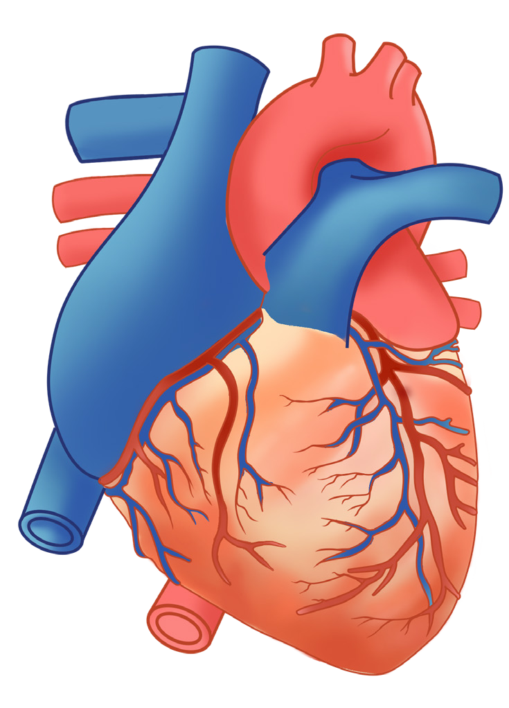

Student’s Book - Form Two

Biology for Secondary Schools
99

expanding when it is beating very fast.
The pericardium also protects the heart from mechanical injury and friction.
It provides enough room for vigorous pumping of the heart. In addition, the pericardium keeps the heart in place to reduce friction between the heart and other structures. This is because it secretes a fluid called pericardial fluid, which lubricates the heart. Also, the pericardial fluid allows for smooth movement of the heart when it beats.
Just beneath the pericardium, the heart’s wall consists of three layers. The outermost layer is called epicardium.
The middle layer is called myocardium, which contains a special type of muscle known as cardiac muscle that contracts and relaxes during heart movement.
The cardiac muscle in the heart never
gets fatigued; they work continuously as long as a person is alive. This type of muscle is found only in the heart.
The inner layer is called endocardium.
There are various blood vessels attached to the heart. The coronary artery supplies the heart muscles with oxygenated blood. The coronary vein carries deoxygenated blood containing waste materials away from the heart. The vena cava is the largest vein that carries deoxygenated blood from the rest of the body to the heart. The pulmonary artery transports deoxygenated blood from the heart to the lungs. The pulmonary vein carries oxygenated blood from the lungs to the heart. The aorta is the largest artery that carries oxygenated blood from the heart to the rest of the body. Figure 5.1 shows the external structure of the mammalian heart.

Superior vena cava
Aorta
Pulmonary artery
Pulmonary veins
Coronary artery
Coronary vein
Inferior vena cava
Figure 5.1: External structure of the mammalian heart
08/04/2026 10:18:29